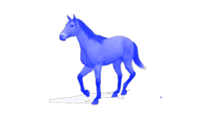

|
“Have itchy feet" That's how we call the
people who can't settle down in a job or place
of residence. "Yeokmasal" is a combination
of Korean term "Yeokma" (horse; one of the
essential transportation methods in the past)
and "Sal" (bad luck). "Yeokgma" refers to
the fate to rove around the world, and "Sal"
refers to the evil spirits. People in Korea
often say to the person who travels a lot that
you are fated to wander over the world and
cannot come back home. However, in the
contemporary context of "Yeokmasal" refers
to a fate of traveling all around the world and
gaining various experience and meeting widea
spectrum of people.
|
Among the series of talisman for Yeokmasal,
Wonhang-Bu is the one which wishes for the
safety. Carrying this talisman on one's body
makes one feels comfortable while traveling,
avoiding illness and theft and wishes good luck
on one's travel. |
 |